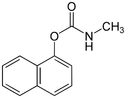

Análisis Químico y Farmacológico del Alivio Cutáneo
Introducción: El Caladryl es una loción tópica de acción antipruriginosa y protectora. Actúa refrescando y desecando la piel, siendo altamente eficaz en el alivio de la irritación mecánica y alérgica.
El Caladryl está diseñado para tratar diversas afecciones cutáneas que generan picazón (prurito) e inflamación:
Composición Química (Cada 100g):
Es una suspensión de fácil aplicación externa y rápida remoción al lavar con agua.

Figura 3. Estructura molecular del compuesto activo analizado.
Grupos Funcionales Identificados:
| Átomo | Hibridación | Forma | Ángulo | Clase |
|---|---|---|---|---|
| #1 C | sp2 | Trigonal plana | 120° | AB3 |
| #2 C | sp2 | Trigonal plana | 120° | AB3 |
| #3 C | sp2 | Trigonal plana | 120° | AB3 |
| #4 C | sp2 | Trigonal plana | 120° | AB3 |
| #5 C | sp2 | Trigonal plana | 120° | AB3 |
| #6 C | sp2 | Trigonal plana | 120° | AB3 |
| #7 C | sp2 | Trigonal plana | 120° | AB3 |
| #8 C | sp2 | Trigonal plana | 120° | AB3 |
| #9 C | sp2 | Trigonal plana | 120° | AB3 |
| #10 C | sp2 | Trigonal plana | 120° | AB3 |
| #11 O | sp3 | Tetraedro | 109,5° | AB4 |
| #12 C | sp2 | Triagonal plana | 120° | AB3 |
| #13 N | sp3 | Tetraedro | 109,5° | AB4 |
| #14 C | sp3 | Tetraedro | 109,5° | AB4 |
| #1' O | sp2 | Trigonal plana | 120° | AB3 |
Desde la fisioterapia, el manejo de este medicamento es vital cuando las afecciones dérmicas impiden el tratamiento con agentes físicos o terapia manual. Comprender su farmacocinética permite identificar contraindicaciones en pacientes con edemas o sensibilidad cutánea extrema.
El estudio permite concluir que la eficacia del Caladryl reside en su acción dual: química (antihistamínica) y física (protectora). La correcta identificación de sus grupos funcionales ayuda a entender su estabilidad y rapidez de acción sobre la piel.
1. Caladryl México. "Qué es y para qué sirve la Loción de Caladryl". Recuperado de caladrylmx.com
2. Laboratorio Elea. "Prospecto Caladryl Crema". Recuperado de elea.com
3. BOC Sciences. "Diphenhydramine Structural and Functional Analysis". Recuperado de bocsci.com